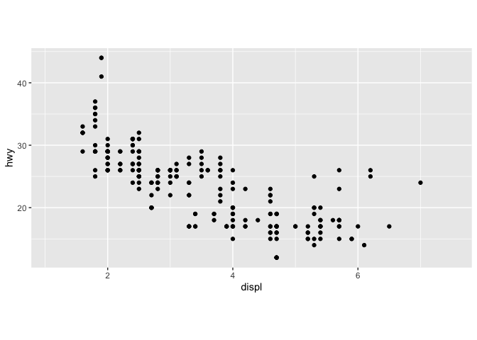
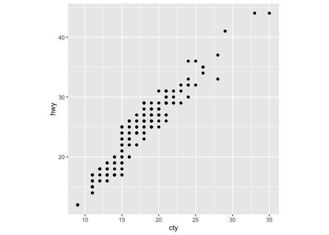
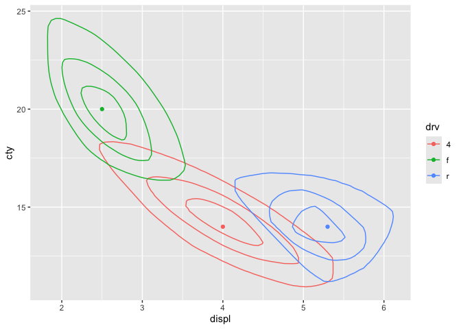
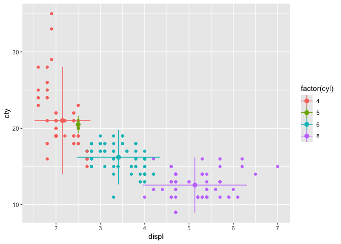

{gggda} extends {ggplot2} with coordinate systems, statistical transformations, and geometric constructions useful to the analysis and visualization of multivariate data, including bivariate generalizations of univariate tools and tools designed for geometric data analysis and ordination.
It is spun off from and designed to interoperate with {ordr}. However, the two packages remain to be completely harmonized.
usage
installation
{gggda} is not yet on CRAN and can be installed as follows using {pak}:
pak::pkg_install("corybrunson/gggda")illustration
Use the new coordinate system to fix the aspect ratio of the plotting window as well as of the coordinates:
# rectangular window (custom aspect ratio)
ggplot(mpg, aes(x = displ, y = hwy)) +
coord_rect(ratio = .1, window_ratio = 1/2) +
geom_point()
# square window (unit aspect ratio)
ggplot(mpg, aes(x = cty, y = hwy)) +
coord_square(xlim = c(0, NA), ylim = c(0, NA)) +
geom_point()
Some new statistical transformations provide new ways of analyzing bivariate data, for example the depth stat that deploys the {ddalpha} package and mimics the density stat by pairing with the contour geom:
# depth medians and quartiles contours by group
ggplot(mpg, aes(displ, cty, color = drv, fill = drv)) +
stat_depth(bins = 4) +
stat_center(fun.ord = depth_median)
Several new geometric constructions have a wide range of uses, including biplots, with two-dimensional errorbars an underused example:
# centroids with 2-standard deviation bars for both variables
ggplot(mpg, aes(displ, cty, color = factor(cyl))) +
geom_point() +
geom_pointranges(fun.data = mean_sdl)
acknowledgments
contribute
Any feedback on the package is very welcome! If you encounter confusion or errors, do create an issue, with a minimal reproducible example if feasible. If you have requests, suggestions, or your own implementations for new features, feel free to create an issue or submit a pull request. Please try to follow the contributing guidelines and respect the Code of Conduct.
resources
Development of this package benefitted from the use of equipment and the support of colleagues at UConn Health and at UF Health.